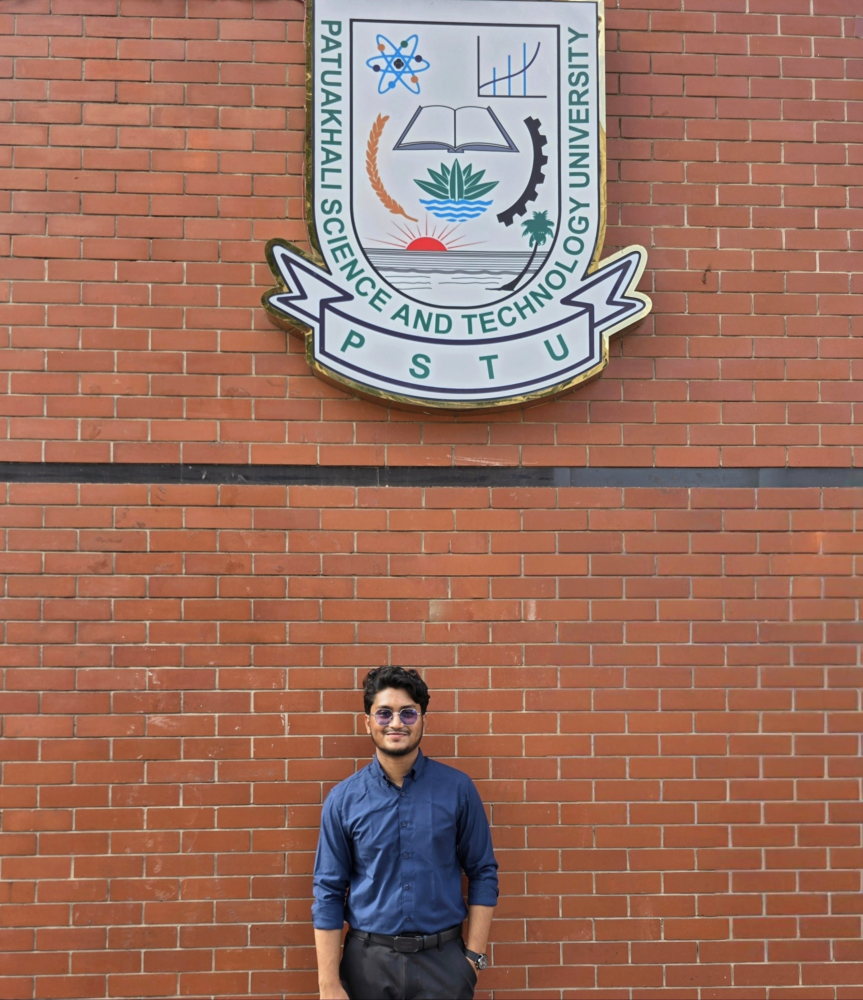

01
Plant Pathology
Understanding plant diseases, causal organisms, disease development, and approaches for disease management.
AGRICULTURE · PLANT PATHOLOGY · RESEARCH
Agriculture undergraduate and Research Assistant working at the intersection of plant pathology, plant-microbe interactions, microbiology, and plant disease management.

Plant Pathology Laboratory
I am an Agriculture undergraduate at Patuakhali Science and Technology University with hands-on research experience in plant pathology, fungal and bacterial pathogens, plant disease management, microbiological techniques, and scientific writing.
My current research activities focus on the isolation, purification, identification, characterization, and management of plant-associated pathogens. Through laboratory research, I aim to better understand plant diseases and contribute to practical approaches for sustainable crop protection.
Alongside laboratory research, I am developing technical skills in R, GIS, bioinformatics, research data management, and scientific communication.
Patuakhali Science and Technology University
Field of Study: Agriculture
Birshrestho Munshi Abdur Rouf Public College
MA Memorial Model Academy
Combining agricultural science, laboratory research, and computational tools to understand and manage plant-associated diseases.
Understanding plant diseases, causal organisms, disease development, and approaches for disease management.
Investigating interactions between plants and associated microorganisms through laboratory-based experiments.
Isolation, purification, culture, characterization, and laboratory investigation of fungal and bacterial pathogens.
Exploring R, GIS, bioinformatics, and research data management for scientific analysis and reproducible research.
Working in a research environment focused on plant-associated pathogens and plant disease management.
Planning experiments and developing appropriate research approaches.
Collecting samples and preparing them for laboratory-based pathogen investigation.
Isolating, purifying, and culturing fungal and bacterial pathogens.
Preparing microbiological media and operating laboratory instruments.
Exploring and analyzing research data to support scientific findings.
Contributing to scientific reports and journal manuscript preparation.
I am interested in expanding my research toward interdisciplinary approaches that combine agricultural science with computational and spatial analysis.
View or download my complete curriculum vitae for detailed information about my education, research, experience, and skills.
I am open to academic discussions, research collaboration, laboratory opportunities, and conversations around plant pathology, plant-microbe interactions, and agricultural research.
Department of Plant Pathology
Patuakhali Science and
Technology University